|

|

|

|

|

|

|

|

|

|

|
|
|
|
Ernesto u. Ida Hoffmann
aus Blumemnau in Brasilien am Stein 2008
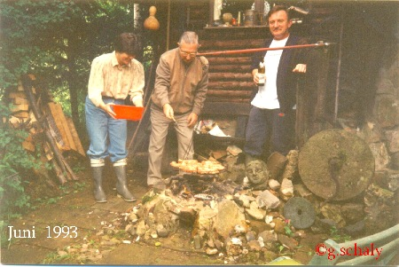
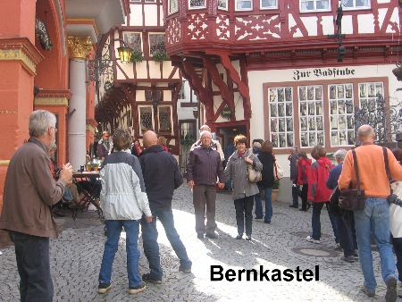
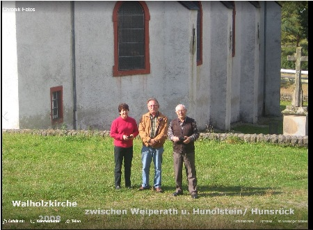
Ida und Ernesto Hoffman zu Besuch in Neuhütten vom 21. bis 24. 11. 2016
Zur Erinnerung an meinen Freund Antonio da Rosa aus Novo Hamburgo RS Brasilien..verstorben 1999
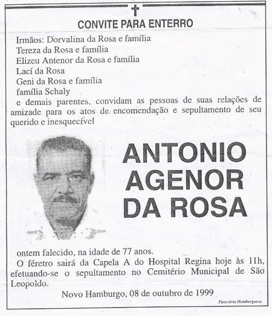
COMUNIDADE EVANGÉLICA DE CONFISSÁO LUTERANA DE HAMBURGO VELHO - IECLB - GRUPO TRÉS REIS MAGOS .. ALTENNACHMITTAG...
FOZ DO IGUACU
1989
Rio de Janeiro, Zuckerhut, von links, Monica Schaly Rio, Gernot Schaly, Neuhütten/ Alemanha, Edith Schaly, Novo Hamburgo RS 1989
von links, Edith, Ricardo, Victor Arno Schaly, G. Schaly Alemanha, Helga Weigl Schaly, Werner Schaly, 2. Reihe: Karin u. Monica Schaly Rio de Janeiro 1989...
Maracana Stadion 1992
Blumenau SC.. zu Besuch bei Helena Hoffmann,
1989.Sie war die Verfasserin von Schaly in Brasilien....bei Vol. VII..FAMíLIAS BRASILEIRAS DE 0RIGEM GERMÂNICA .Sie war die Enkelin von Augusto Schaly..
Canela RS Cascata do Caracol
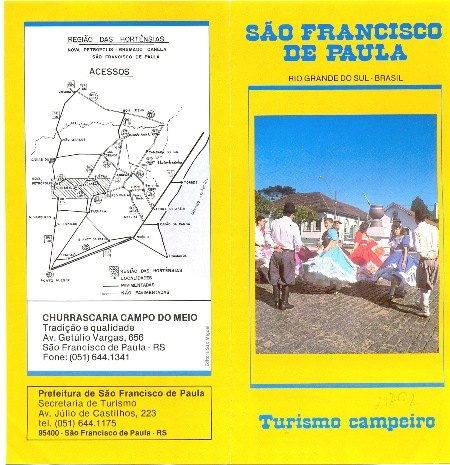
Sáo Francisco de Paula Rio Grande do Sul Brasilien 1992 Besuch bei der Familie Lorenz aus Novo Hamburgo...im Ferienhaus
Pomerode SC besucht 1989, 98, 2014 ,eine schöne, saubere Stadt
Pomerode SC 2014
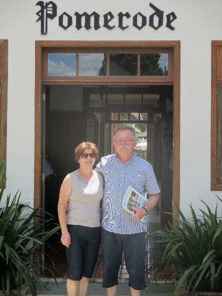
Sào Bento
do Sul 1998
Novo Hamburgo RS. Brasil Av. Dr. Mauricio Cardoso No. 383
Lomba Grande RS wir waren auf die Kirmes
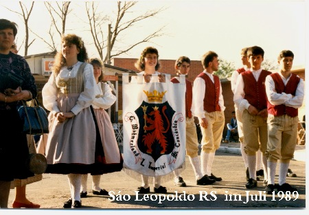
Zu Besuch bei Familie Körbes in Sào Joào do Oeste SC..4.11. 1998
Kolonialwarenladen ( Wende) in der Gegend von Itapiranga SC
Lomba Grande RS 1998
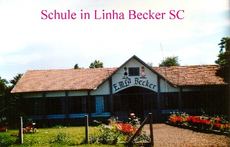
Linha Beato Roque, Sáo Joáo do Oeste Sc Brasilien
er hat in der Schule nie Deutsch gelernt und kann sich doch verständigen... er ist ein Nachfahre deutscher Einwanderer in Santa Catarina....habe ihn besucht 1998
Ruhestätte von Wilhelm Petry aus Schwarzen im HUnsrück
Anne Willrich besuchte ihren Bruder in Primstal /Saar. Er arbeitete
als
Bäcker im Cafe Mörsdorf
bei den Köhlern in Ivoti RS
Bei den
Kohlenbrenner in Ivoti RS.. Dez. 2000
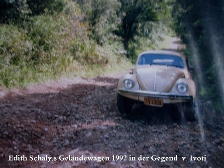
<Novo Hamburgo RS 3.11. 1998
Ich war zu Besuch in seinem Atelier auf dem Hamburger Berg ...
Bilder unten in der Gegend von Itapiranga SC bei Besuch von Helmuth Körbes
Estrela RS. Besuch der Grabstätte des Mettnicher ( Primstal) Auswanderer Mathias Becker Delwing und dessen Ehefrau Elisabeth geb. Kollet X Grabstein Estrela RS 2000
Friedhof Bom Principio Rio Grande do SUL.. BRASILIEN 2000
....
Grabstätte Eheleute Peter Scherer aus Theley
Friedhof
Teutonia RS Brasilien 2000... Grabstätte der Catharine Lambert geb. Windrath aus DUSEMUND a.d. MOSEL ( heute Brauneberg ) geb. 23.6. 1808 + 1888........
zu Besuch bei Familie Strücker...
in Teutonia RS
Frederico Bernhard Schaly, Sohn v. August Schaly u. Carolina Bender
Josef Schaly * 28.1. 1874 in Sáo Leopoldo + 3.2.1924 in Pimenta Sohn v. Augusto Schaly u. Carolina Bender oo 1896 Amalia Krug.
Die Familie hatte 11 Kinder, 2 sind schon 1924 tot...
Deutsche Post Sáo Leopoldo 1927
Werner Schaly studierte in Bonn, Deutschland.. Er und seine Schwester Edith und ihr Bruder Alex Günther sprachen perfekt Hoch Deutsch .Werner wohnte mit seiner Familie in Rio de Janeiro. Auch seine Frau Helga Weigel sprach Deutsch. Ich besuchte die Familie in Rio de Janeiro 1989 und 1992.
Er war ein Urenkel von Augusto Schaly
in Novo Hamburgo RS 2014
24.11. 2014 in Novo Hamburgo RS
ev. Friedhof Blumenau 2014
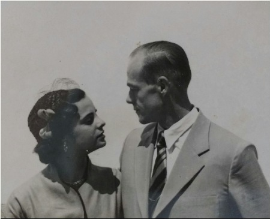
Alex Guenther Schaly * 1918 Sáo Leopoldo + 1978 Miguel Pereira RJ OO Elza de Vasconcelos Barros * 1930 Rio de Janeiro +
Grabstätte des Auswanderers August Schaly
*1845, Ehefrau und Töchter - Friedhof Sào Leopoldo RS 1989
So sieht die Grabstätte heute aus. Ernesto Hoffmann aus Blumenau SC hat weder Kosten noch Mühe gescheut die verfallene Grabstätte des Augusto Schaly wieder herzurichten. So bleibt sie nun für die Nachwelt erhalten..
Der Auswanderer
- August Schaly, Ehefrau Karoline Bender und Familie - Sào Leopoldo RS 1888
Vier Generationen Schaly
- v.l. August Schaly Filho +, Arno Edwin Schaly +1967, Ricardo Schaly, Alex Günther Schaly +1978 - Novo Hamburgo 1954
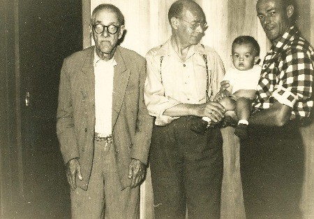
von liks
Alwine, Elke, Gernot, Ricardo und Kind Roberto.. 1992
Rio de Janeiro Okt. 1995,v.Links, Helga ,Werner, Karin, Elke, Bobbie
E' tudo Schaly,de Fraiburgo, Rio de Janeiro e Novo Hamburgo von links Helga,Ariovaldo, Gerda, Walter Irene, Edith, zweite Reihe, Victor, Wanderlei, Monica, 3 Reihe , Karin, Eduardo...Novo Hamburgo RS Rua Dr. Mauricio Caradoso ... 1979 - 80
Fam. Walter Schaly Fraiburgo SC Brasil 22.10. 1983
v.l. Ariovaldo, Irene, Walter und Bruno Schaly
Walter Schaly u. Irene Luersen Fraiburgo SC
Moacir Schaly mit Frau Christina und Sohn Joao Victor.. Ur Ur- Enkel von Augusto Schaly...
Arno Rui u. Carolina Vieira Schaly aus Campos Novos
Vorfahren von Arno Schaly mütterliche Seite...
von links
Nilton Rogério Schaly, Arno Rui Schaly, Moacir Schaly , Alda Schaly, Ana Lidia S Behrens ... Nachkommen von Augusto Schaly
Ana Lidia Schaly Behrens Valter Behrens
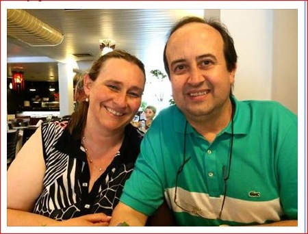
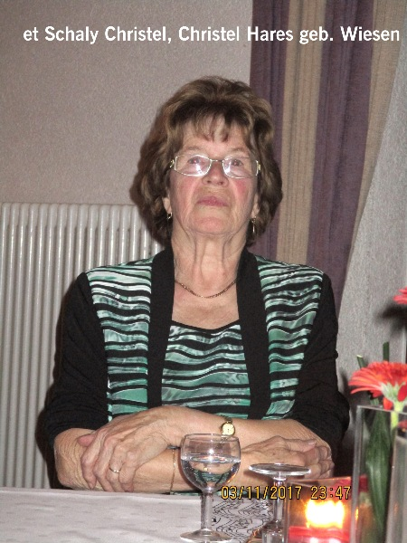
Heinz Josef Schaly, Nachkomme von Johann Schaly u. Gertrud Eckel 1940 - 2002 begraben in Braunshausen..
sein erstes Auto
April 2016 von links Dieter Schaly, Gernot Schaly
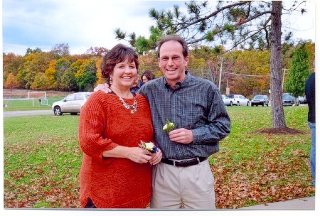
Friedhof in Dirmingen /Saar
Victor Arno Schaly mit Frau Regina Gonzalez und Sohn Lukas
Rio de Janeiro 8. 10. 2002
Ernesto Hoffmann Blumenau SC Brasil e Familia 2007
Carlos Schaly Porto Alegre RS
Carlos Schaly Campos Novos SC
Carlos mit Sohn Guilherme Schaly ( Gernot Schaly )
Carlos, Moacir, Paulo, Nilton Schaly Nachkommen v. Augusto Schaly
Carlos u. Caudete Schaly Campos Novos
Alda Schaly, Schwester v. Irene , Carlos, Moacir,Paulo, u. Nilton Schaly , Kinder v. Otto Schaly u. Wanda Rosar Fraiburgo SC
Moacir u. Arno Schaly
Arno, Gernot u. Arivaldo Schaly 2014 in Campos Novos SC Brasil
von links, Floria Karina Martins Schaly, Wanderley Schaly, Gerda mit Gabriel, Ariovaldo, Eduardo Schaly,Emanueli Rebeschini Schaly
Norberto Schaly Gernot Schaly Nov.2014
Arno Rui Schaly, Nachkomme von August Schaly aus Birkenfeld (ausgewandert nach Brasilien 1861 ) besucht Cafe Heimat in Morbach 5.12. 2014, links Arno, rechts Gernot Schaly
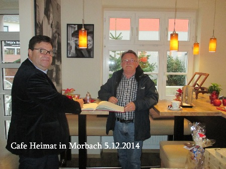
Osvaldo Schaly * 11.2. 1900 + 27.2. 1974, Sohn v. Josef Schaly u. Amalia Krug. oo Luiza m. Teike Schaly * 10.12. 1897 + 14.10.1956
wohnhaft Lucerna SC
ein großer Schaly.....Nachkomme von Augusto Schaly....Gründer von Bruno INDUSTRIAL Oscar Bruno Schaly
Don Schaly Stadion, Vorfahren kamen von Mariahütte Gem. Nonnweiler
MADE in ALEMANHA
Gustavo
Schaly u. Familie
mit den Kindern, Gustavo, Joào ,Emilio, Cacilda
Die Familien... SCHALINS in CAXIAS do Sul RS sind Nachkommen von Gustavo Schaly und Januaria Nuntes.....
Mitteilung von
Marlei de Oliveiro Schalins... Caxias do Sul RS Brasil.....
Otto Schaly Sohn v. Friedrich Wilhelm Schaly u. Margarethe Buck + 1919
rechts mit Bart, Friedrich Wilhelm Schaly, links Sohn Wilhelm
Amtsblatt von Birkenfeld vom 25.8. 1852 Geschäftsanzeigen
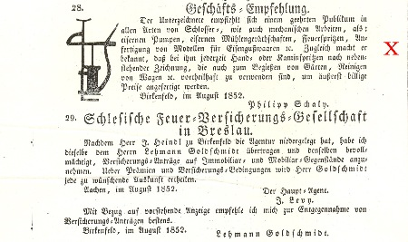
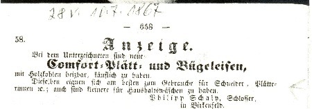
© 2009-2011 Gernot Schaly
|